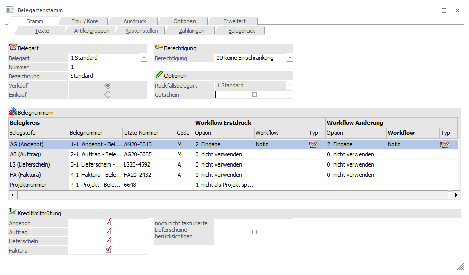
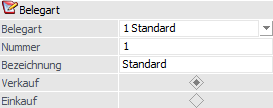
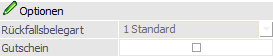
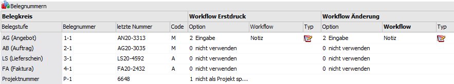
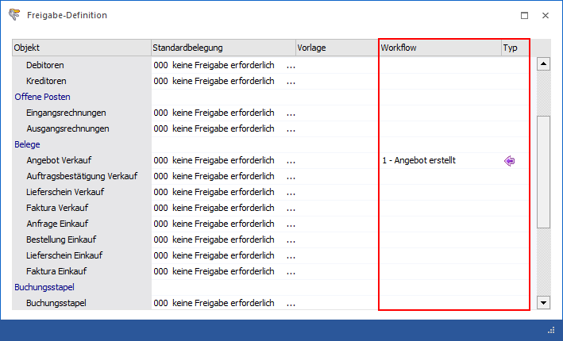
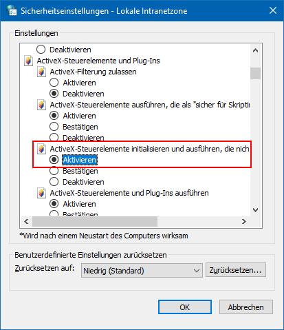
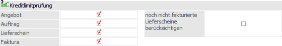

In dem Register "Stamm" werden die grundsätzlichen Einstellungen einer Belegart (Einkauf / Verkauf, Belegnummer, etc.) getroffen.

Belegart

Ø Belegart
An dieser Stelle kann aus einer Auswahlbox eine bestehende Belegart gewählt werden. Wenn eine neue Belegart angelegt werden soll, dann muss an dieser Stelle der Punkt "NEUEINGABE" ausgewählt werden.
Ø Nummer
Hier erfolgt die Eingabe einer Kennzeichnung unter welcher die Belegart geführt werden soll (20stellig, alphanumerisch).
Hinweis
Falls die Belegart 1 noch nicht vorhanden sein sollte (z.B. nach einer Neuanlage des Mandanten), so kann diese nur als Verkaufsbelegart angelegt werden. Die Belegart 99 kann wiederum nur als Einkaufsbelegart angelegt werden.
Beide Belegarten können in solch einem Fall mit Hilfe des Buttons "Standardbelegarten angelegt" erzeugt werden.
Ø Bezeichnung
Hinterlegung der Belegartenbezeichnung in Form einer 25stelligen, alphanumerischen Eingabe.
Hinweis
Mit der Taste F9 können bei einer Neuanlage sämtliche Einstellungen einer bereits bestehenden Belegart übernommen werden.
Ø Verkauf / Einkauf
Durch Anwahl der Einstellung "Verkauf" oder "Einkauf" wird festgelegt, ob es sich um eine Einkaufs- bzw. Verkaufsbelegart handelt.
Hinweis
Einkaufsbelegarten können entsprechend nur für Kreditoren und Verkaufsbelegarten für Debitoren genutzt werden.
Berechtigung

Ø Berechtigung
Für jede Belegart kann ein Berechtigungsprofil vergeben werden. Wenn der Anwender eine Belegart aufruft, wird geprüft, ob der Anwender einer Benutzergruppe zugeordnet wurde, welche in dem jeweiligen Profil enthalten ist und ob somit eine Bearbeitung erlaubt wäre (nähere Informationen entnehmen Sie bitte dem WinLine ADMIN - Handbuch).
Hinweis
Benutzern des Typs "Administrator" oder mit der Administratorenberechtigung "Benutzeradministrator" steht in der Auswahlbox der Punkt ">> Neues Profil" zur Verfügung. Über die Anwahl dieses Eintrags kann in der Folge ein neues Berechtigungsprofil angelegt werden.
Optionen

Ø Rückfallsbelegart
Wenn mit einer Belegart der Nummernkreis einer anderen Belegart angesprochen werden soll, dann wird für diese Belegart kein Nummernkreis hinterlegt. Dabei ist es aber unbedingt erforderlich, dass in der Belegart (ohne eigenen Nummernkreis) eine entsprechende "Rückfallsbelegart" ausgewählt wird.
Das würde bedeuten, hat eine Belegart bzw. eine Belegstufe keinen Nummernkreis hinterlegt, so wird auf die Rückfallsbelegart und den dortigen Nummernkreis der jeweiligen Stufe zurückgegriffen. Sollte auch diese Rückfallsbelegart keine entsprechende Belegnummer hinterlegt haben, dann kann wiederum, abhängig von der Einstellung "Mehrstufige Rückfallsbelegart berücksichtigen" in der FAKT-Parametern, auf eine weitere Rückfallsbelegart zurückgegriffen werden.
Hinweis
Die Standardbelegarten Verkauf (Belegart 1) und Einkauf (Belegart 99) können nur sich selbst als Rückfallsbelegart hinterlegen und nur gespeichert werden, wenn in allen Belegstufen und der Projektnummer ein Nummernkreis hinterlegt wurde (Ausnahme: der Druckstatus steht auf N).
Ø Gutschein
Durch Aktivierung der Option "Gutschein" handelt es sich um eine Gutscheinbelegart. Nur mit einer solchen Belegart kann in der Stufe "Faktura" ein Gutschein ausgestellt werden.
Belegnummern

Ø Belegkreis (Angebot / Auftrag / Lieferschein / Faktura)
Das Eingabefeld der Belegnummer ist eine Combobox, aus der der gewünschte Nummernkreis ausgewählt werden kann. Daneben wird die zuletzt vergebene Belegnummer angezeigt.
Beim Upsizen auf die Version 12 wird für jede Belegart und jede Belegstufe plus Projektnummer ein Nummernkreis angelegt. Im Menüpunkt "Nummernkreise" können Beleg-Nummernkreise angelegt und editiert werden.
Belegarten, die sich selbst als Rückfallsbelegart eingetragen haben (1 und 99), können nur gespeichert werden, wenn in allen Belegstufen und der Projektnummer ein Nummernkreis hinterlegt wurde (Ausnahme: der Druckstatus steht auf N).
Hinweis
Beim Ausdruck eines Beleges wird die Belegnummer im Nummernkreis automatisch um 1 erhöht. Es können 50 Zeichen für die Belegnummer verwendet werden, wobei lediglich die letzten 19 Stellen für das Hochzählen der Belegnummer verwendet werden und die max. Nummer dabei 9223372036854775807 darstellt.
Beispiel für Nummernvergabe
Die Zählweise der Beleg- bzw. der Projektnummer erfolgt nach dem Schema, dass die letzte Stelle hochgezählt wird, d.h.:
ü Aus 479-FA wird 479-FA1
ü Aus FA-479 wird FA-480
Ø Abarbeitungscode
Der Abarbeitungscode (Status) zeigt an, wie die jeweilige Belegstufe bearbeitet werden soll. Mögliche Codes (Stati) sind:
ü A
Der Beleg wird automatisch im
Belegdruck zum Ausdruck vorgeschlagen, wenn die Vorstufe bearbeitet (= gedruckt)
wurde.
ü D
Der Beleg wurde bereits
gerechnet (wird automatisch vom Programm vergeben).
ü M
Der Beleg wird manuell
erfasst.
ü N
Der Beleg soll in dieser
Belegstufe nicht bearbeitet werden.
Hinweis
Wenn Belege importiert werden, dann müssen die nicht genutzten / übersprungenen Belegstufen immer mit N gekennzeichnet werden. Dadurch wird dem Programm mitgeteilt in welcher Belegstufe der importierte Beleg bearbeitet werden soll.
Beispiel
Rechnungen werden direkt in WinLine importiert und sollen über den Belegdruck ausgegeben werden. In diesem Fall muss der Belegstatus "NNNA" lauten.
ü B
Der Druckstatus B bedeutet,
dass beim Kopieren des Beleges im Autobeleg das erste B durch den Druckstatus A
(für automatischen Belegdruck) ersetzt wird. Die Vorstufen erhalten den
Druckstatus N (für nicht bearbeiten) und die Folgestufen den Druckstatus aus der
Belegart.
Hinweis
Belege mit dem Status B können weder gerechnet noch gedruckt werden.
Beispiele
Belegart mit
Code MMAS - Ursprungsbeleg mit Status MMBS à Neuer Beleg mit Status NNAS
Belegart
mit Code MMAA - Ursprungsbeleg mit Status
BMAA à Neuer Beleg mit Status AMAA
ü S
Es soll ein
Sammellieferschein oder eine Sammelfaktura erzeugt werden.
Hinweis
Dieser Status ist nur für bei den Belegstufen "Lieferschein" und "Faktura" hinterlegbar.
ü *
Der Beleg wurde bereits
gedruckt (wird automatisch vom Programm vergeben).
ü L
Der Beleg wurde gelöscht
(wird automatisch vom Programm vergeben).
Hinweis
Bei einem gelöschten Beleg wird in allen 4 Belegstufen ein L dargestellt, d.h. der Belegstatus lautet "LLLL".
ü -
Wenn ein Beleg in allen vier
Belegstufen ein - aufweist, bedeutet dieses, dass der Beleg komplett erledigt
ist, d.h.
ü Ein Angebot wurde in einen Auftrag umgewandelt (Angebot erhält den Status "----")
ü Ein Auftrag wurde durch Lieferscheinerstellung bereits vollständig ausgeliefert (Auftrag erhält den Status "----")
ü Ein Lieferschein wurde in eine Faktura bzw. Sammelfaktura umgewandelt (Lieferschein erhält den Status "---")
Hinweis
Nur solange die erledigten Belege im System erhalten bleiben, sind spezielle Rückverfolgungsauswertungen (z.B. Auftragsverfolgung) möglich.
ü K
Bei dem Beleg handelt es sich
um einen Kontrakt, welcher über den Programmbereich "Kontrakte erfassen"
erstellt wurde (wird automatisch vom Programm vergeben).
Hinweis
Bei einem Kontrakt wird in allen 4 Belegstufen ein K dargestellt, d.h. der Belegstatus lautet "KKKK".
Hinweis
Wenn in einer Belegstufe ein D oder ein * eingetragen ist, wurde dieser Beleg bereits gerechnet. Dieser Beleg kann jedoch in der jeweiligen Belegstufe nochmals aufgerufen und editiert werden, solange er noch nicht in der nächsten Belegstufe bearbeitet wurde. D.h. ein Lieferschein, der schon in der Stufe Faktura bearbeitet wurde, kann nicht mehr editiert werden. Fakturen können nur so lange editiert werden, bis sie in der in der Finanzbuchhaltung verbucht wurden!
Ø Workflow Erstdruck / Workflow Änderung
Für den "Erstdruck" und für die "Änderung" eines Belegs kann in diesem Bereich definiert werden, ob in der jeweiligen Belegstufe ein CRM-Schritt geschrieben werden soll bzw. welcher Schritt dies sein soll.
ü 0 - nicht verwenden
Es wird
kein CRM-Schritt in dieser Belegstufe verwendet.
ü 1 - lt. Freigabedefinition
Es
wird jener CRM-Schritt geschrieben, der in der Freigabedefinition hinterlegt
wurde.

ü 2 - Eingabe
Im Eingabefeld
"Workflow" kann ein CRM-Schritt angegeben werden, der in der Belegstufe
geschrieben werden soll. Um nach einem CRM-Schritt zu suchen, stehen die
Autovervollständigung und der Matchcode zur Verfügung.
Hinweis - WinLine CRM
Voraussetzung dafür, dass CRM-Schritte aus der Belegerfassung geschrieben werden können ist, dass im WinLine ADMIN unter "WEBEdition" - "CRM Kompakt" im Feld "WWW-Adresse" ein Eintrag vorhanden ist.
Hinweis - WinLine WEBEditon
Voraussetzungen dafür, dass Workflows in der WEBEdition mit Belegen verknüpft werden können:
ü 1. Installierte WEBEdition
ü 2. Es muss ein Webbenutzer angelegt sein, der den Typ "CWL-Benutzer" hat und bei dem der verwendete CWL-Benutzer hinterlegt ist.
ü 3. Es muss ein CWL-Benutzer mit einer Benutzergruppe ungleich 0 verwendet werden.
ü 4. Im Internet Explorer muss unter
"Internetoptionen - Sicherheit - Lokales Intranet - Stufe anpassen" die Option
"Active-X-Steuerelemente initialisieren und ausführen, die nicht sicher sind..."
auf "Aktivieren" gesetzt werden.

Anlage eines Workflows aus einem Beleg
Falls laut Belegart bei einer Stufe eine Aktion bzw. ein Workflow(schritt) erzeugt werden soll, erfolgt die Anlage / Weiterführung bei den folgenden Aktionen "automatisch":
ü Drucken von Belegen im "Belegerfassen"
ü Drucken von Belegen im Menüpunkt "Lieferantenbelege erstellen"
ü Drucken von Lieferscheinen im Menüpunkt "Kundenlieferscheine drucken"
ü Drucken von Belegen im Menüpunkt "Belege drucken"
ü Drucken von Sammelfakturen im Menüpunkt "Sammelfaktura
ü Drucken von Lieferantenlieferscheinen im Menüpunkt "Lieferantenlieferungen bearbeiten"
Dabei werden die Einstellungen aus den "Workflow-Vorlagen" (weitere Informationen entnehmen Sie bitte dem WinLine START-Handbuch / Kapitel "Workflow-Vorlagen") bzw. aus der individuellen Vorlage für die Vorbelegung der Felder berücksichtigt.
Manuell kann ein Workflow direkt im Belegerfassen über den Button "Beleg CRM" angestoßen werden.
Hinweis
Die Felder werden ggfs. mit den Eingaben aus der "Workflow-Vorlage" bzw. der individuellen Vorlage gefüllt.
Ø Projektnummer
Zusätzlich zum Nummernkreis für die Belegstufen gibt es einen eigenen Nummernkreis für die Projektnummer (20stellig, alphanumerisch). Dadurch ist es möglich für eine gesamte Belegfolge (Angebot - Auftrag - Lieferschein - Faktura) eine durchgängige Nummer zu vergeben, die:
ü automatisch hochgezählt wird
ü unabhängig von der Anfangsbelegstufe ist
ü über den gesamten Belegfluss erhalten bleibt
Ist kein Projektnummernkreis vorhanden, so wird jener der Rückfallsbelegart verwendet. Über die Option
ü 0 - als Projekt speichern
ü 1 - nicht als Projekt speichern
kann zusätzlich entschieden werden, ob bei der Nummernvergabe gleichzeitig ein Projekt im Projektestamm erzeugt werden soll (eine Überarbeitung wäre dann im Programmbereich "Projektestamm" (Stammdaten - Projektverwaltung - Projektstamm) möglich).
Achtung
Die Anlage eines neuen Projektes erfolgt nur dann automatisch, wenn beim Erfassen eines Beleges NICHT manuell eine Projektnummer angegeben wird, sondern beim Belegdruck die Automatik (Projektnummer aus der Belegart) verwendet wird!
Hinweis
Die Nummernvergabe an sich kann nicht deaktiviert werden.
Kreditlimitprüfung

Ø Kreditlimitprüfung
Im Personenkontenstamm kann pro Konto ein Warn- bzw. Sperrbetrag hinterlegt werden. In welchen Belegstufen dieser Warn- bzw. Sperrbetrag geprüft werden soll, kann an dieser Stelle durch Setzen der Häkchen eingestellt werden. Damit ist es z.B. möglich, auch bei der Sperre eines Kunden "Angebote" oder "Barfakturen" zu erfassen.
Die Prüfung in der Belegbearbeitung erfolgt aufgrund des Kontensaldos und der vorhandenen Buchungsstapel (jeweils Brutto-Werte)! Durch Aktivierung der Option "noch nicht fakturierte Lieferscheine berücksichtigen" werden die bereits erfassten Lieferscheine ebenfalls bei der Prüfung berücksichtigt.
Beispiel
In der Belegart wurde hinterlegt, dass die Kreditlimitprüfung in der Belegstufe "Auftrag" erfolgen soll. Bei der Prüfung geht WinLine wie folgt vor:
ü Ermittlung der Vorgabe
Die
Vorgabe des Kreditlimits wird aus dem Personenkontenstamm (Register "FIBU",
Option "Warnen bei" und / oder "Sperren bei") ermittelt und beträgt z.B.
1000,00€.
ü Ermittlung des bisherigen
Verbrauchs
Der bisherige Kreditlimitverbrauch ermittelt sich aus den noch
offenen OPs, den nicht gebuchten FIBU-Stapeln und ggfs. den offenen
Lieferscheinen des Personenkontos und beträgt z.B. 400,00€.
ü Ermittlung der offenen
Spanne
Die Ermittlung der offenen Spanne ergibt sich rechnerisch aus "Vorgabe
des Kreditlimits - Bisheriger Kreditlimitverbrauch = Offene Spanne" (hier
600,00€)
ü Anwendung der offenen
Spanne
Die offene Spanne des Kreditlimits wird in der Folge pro Auftrag
jeweils einzeln angewandt (die nun folgenden Aufträge werden nacheinander
erfasst):
1. Der Auftrag AG-0001 wird erfasst mit einem Artikel über 599€
=> keine Meldung
2. Der Auftrag AG-0002 wird erfasst mit einem Artikel
über 599€ => keine Meldung
3. Der Auftrag AG-0003 wird erfasst mit einem
Artikel über 601€ => Kreditlimitmeldung
4. Der Auftrag AG-0004 wird
erfasst mit einem Artikel über 599€ => keine Meldung